Link added
WhatsApp Group
Main branch committee communication happens in WhatsApp. Use this direct link to open the Branch WhatsApp group.
One easy place to see what the Glasgow Branch is working on, find the right files quickly, and drop in notes, ideas, assets or updates without getting lost in different folders.
Current branch work, files and drop-off spaces in one place: open an intake to add notes, or open assets to view, download and upload files for that area.
Why this exists: we are all doing this voluntarily, often in small pockets of time. This gives the whole team one place to see where things are at, add ideas for emails, drop in text or assets, and keep information together so email blasts and page updates are not left sitting in one person's head or inbox.
Main branch committee communication happens in WhatsApp. Use this direct link to open the Branch WhatsApp group.
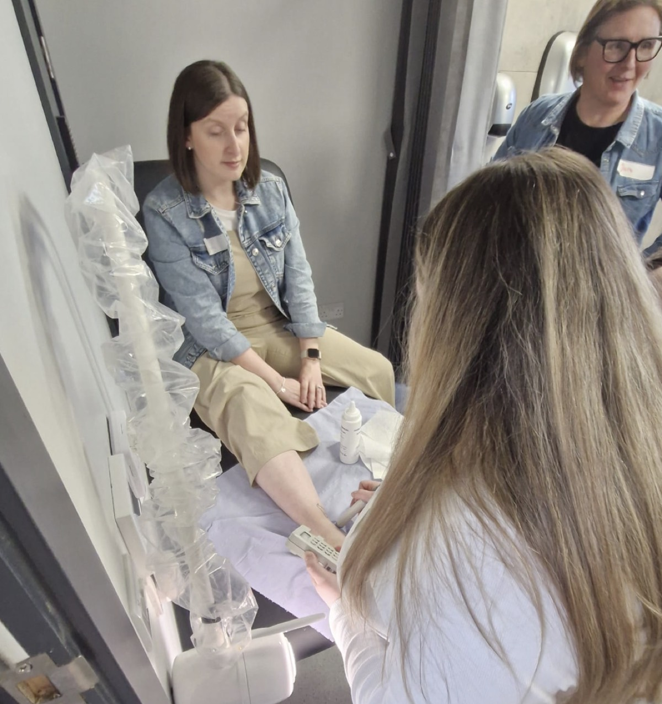
For team members who already have a MedTech login and need to check branch contacts, event admin, bookings or member-related records.
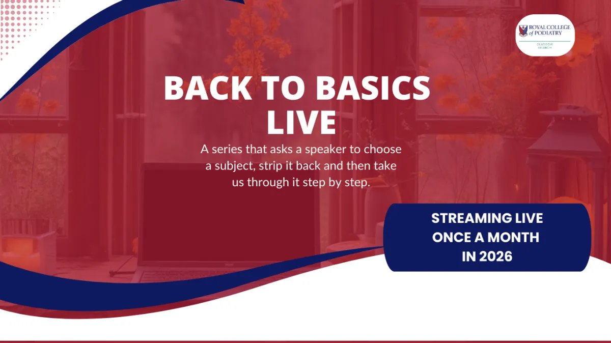
Dates, session notes, speaker/profile details, pictures and resources for Back to Basics.
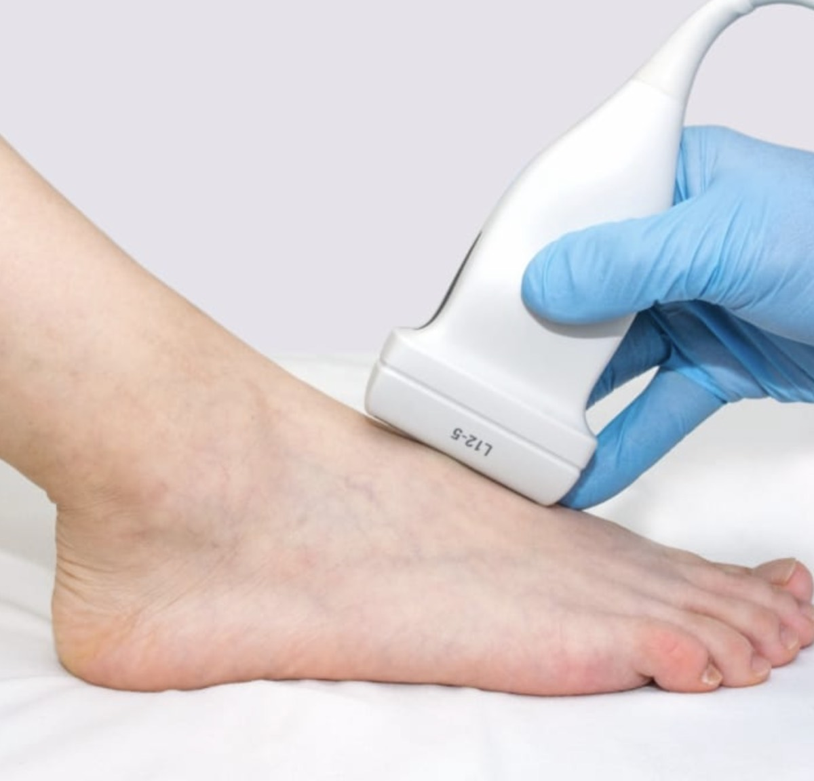

POM-S dates, speaker notes, booking links, images and documents for the medication CPD page.
Email ideas, dates, links, resources, images and attachments for member updates.
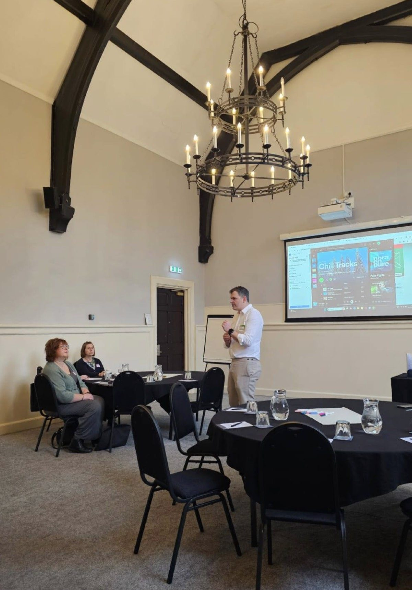
Current page assets, logos, workshop images and community imagery for the public engagement project.
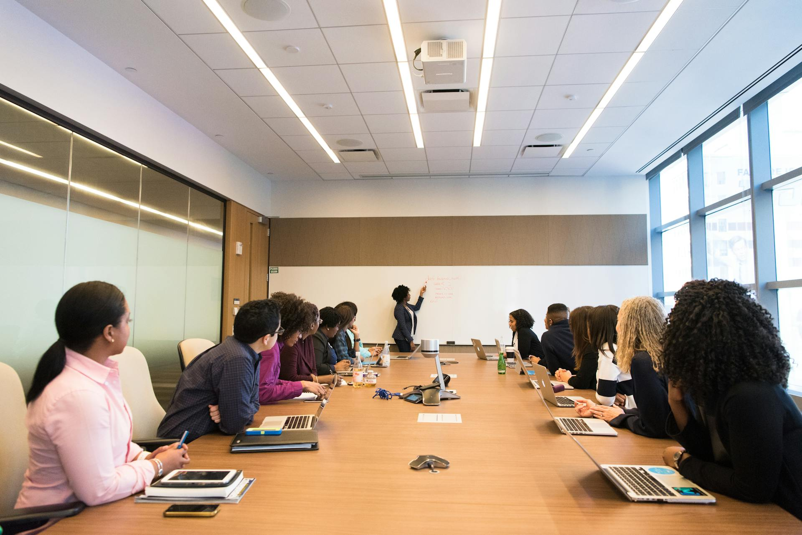
Conference copy, page files, speaker assets and promotional material.
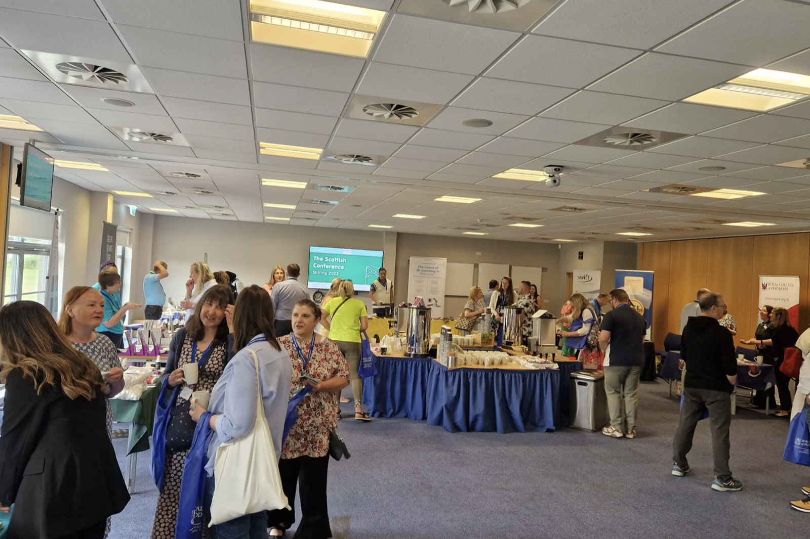
Homepage and event imagery used in the Glasgow Branch page rebuild.
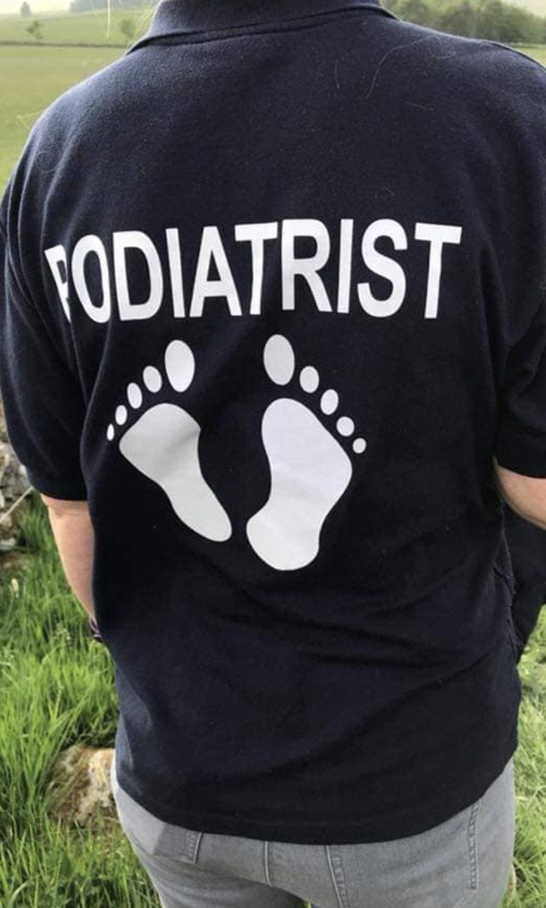
Quick links to the live Glasgow Branch website and branch Facebook page.
Use MedTech when someone needs live branch/admin information that belongs inside the branch system rather than in WhatsApp or this dashboard.
Use when a committee member needs to find someone, check branch records, or locate contact details held in MedTech.
Use for booking/admin checks, attendee information, event records, or anything connected to branch events and courses.
All team members should use their own MedTech login. If someone cannot access it, add a request to the board rather than sharing another person's login.
Live areas of work from the Glasgow Branch, grouped by what can move now and what is waiting on confirmation.

One member-facing page with two vote YES sections: Branch Activity Fund and member consultation on The Podiatrist.
Keep wording cautious until the College confirms the proxy mechanism, deadlines, and accepted submission formats.
Current conference page and promo copy for the Stirling conference on 23 May 2026.
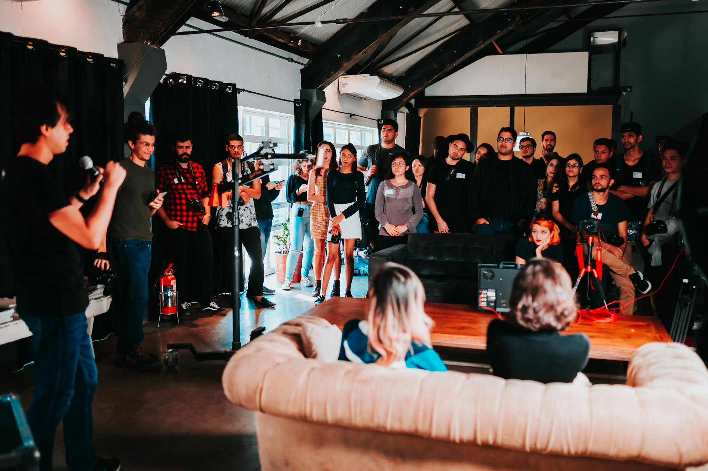
One-week launch offer after SC26: reserve next year's conference at this year's early-bird price.
Repush/tidy the LA update once current date, format, speaker, and booking link are confirmed.
Laura Jane owns this area. Current POM-S information has been pulled from the website, and the intake page can collect dates, assets, speaker notes and files.
Add visible links/cards for AGM 2026, A Thousand Small Steps, SC26, and the LA update once confirmed.
Anne Melville owns this area. Current website details need confirming, and new dates, notes, photos, profiles, and assets can be collected through the intake page.
Royal College of Podiatry Glasgow Branch podcast in development for Back to Basics training. Sarah-Jane is building this up.
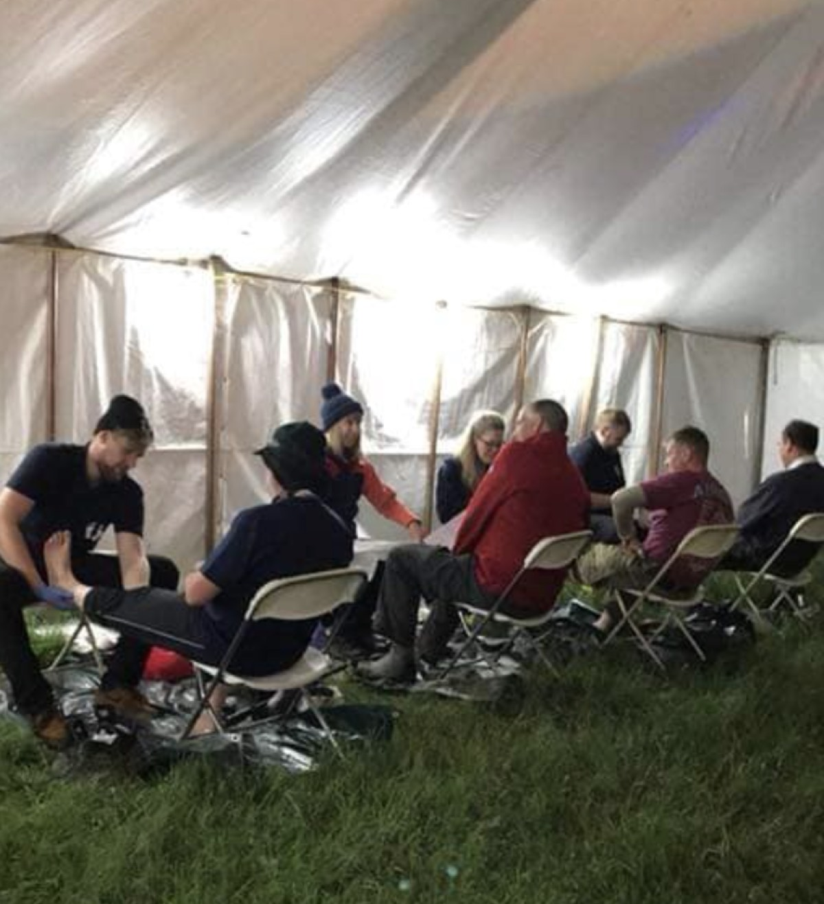
Expenses review only: record the annual costs, renewal dates, invoices and recent usage for both subscriptions before the next renewal cycle.

Second AGM vote YES motion about member consultation before removing paper copies or changing publication access.
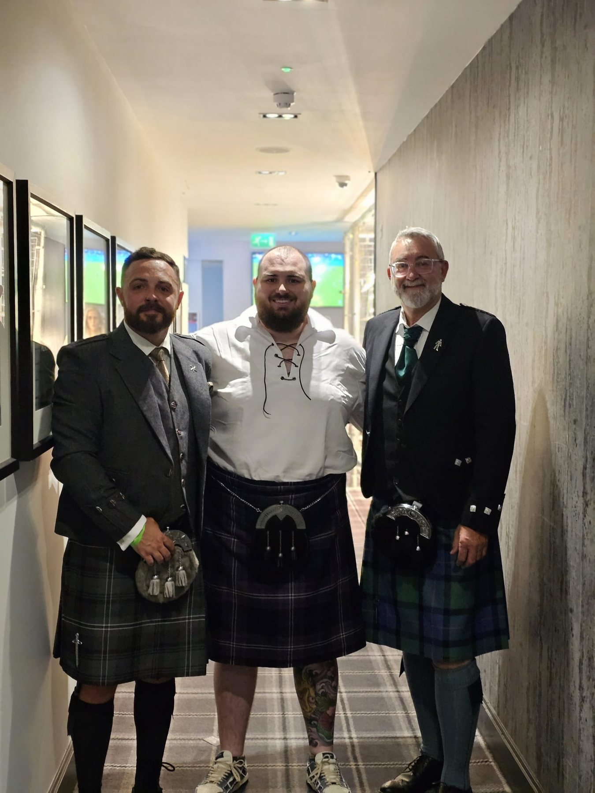
The joined-up document with call notes, people, priorities, build list, open questions, and file references.
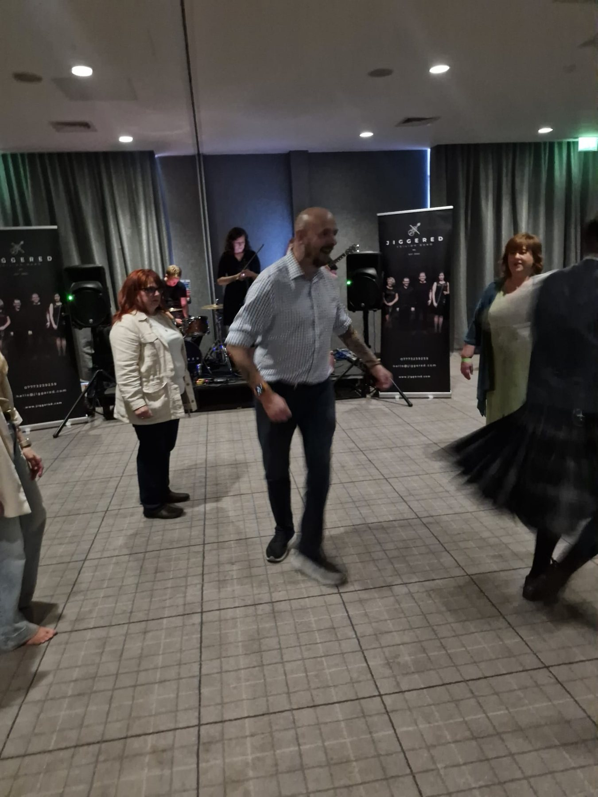
Shared intake for branch members to drop resources, assets, links and ideas for member emails and updates.
Ask for an email nudge, website update, social post, asset change, booking link update or decision. This keeps requests visible to the working group.
Direct links to the main documents, pages, intake areas and asset folders for the branch.
| File | Use | Status |
|---|---|---|
| branch-notes.html | Clean browser view of the branch notes and workstream context. | Use this instead of sending people raw Markdown files. |
| ASSET-DROP-OFF-GUIDE.md | Explains how committee members should drop files into the correct asset area. | Use this when sharing the dashboard with contributors. |
| assets-index.html | Browser-friendly asset index for all current project asset areas. | Use this instead of raw folder links when the browser shows an error. |
| Branch WhatsApp group | Direct invite link for the Glasgow Branch WhatsApp group. | Live link added. Share only with people who should have access. |
| action-requests.html | Shared action request board for member update requests, website updates, social posts and decisions. | Visible local board only; no automatic pings, emails or task creation. |
| Glasgow Branch website | Live public branch website. | Direct external link. |
| Branch Facebook page | Facebook link used by the Glasgow Branch website header. | Direct external link. |
| agm-campaign-copy.html | Clean browser view of the AGM 2026 campaign copy. | Use this instead of sending people raw Markdown copy. |
| HBGA-branch-chair-briefing-pack.md | Branch Chair briefing pack for Help Branches Grow Again. | Ready as campaign reference. |
| thousand-small-steps.html | Existing A Thousand Small Steps page. | Needs confirmed date, venue, and form route. |
| glasgowbranch-ghl-rebuild.html | Branch homepage rebuild file. | Ready for new cards/alerts. |
| sc26-ghl-rebuild.html | Scottish Conference 2026 page. | Current booking page file. |
| rcop-glasgow-promo/PROMO_COPY.md | SC26 captions, social copy, and key details. | Ready to reuse. |
| rcop_glasgow_event_dates.csv | Known event dates gathered from branch materials. | Useful reference; confirm current LA details. |
| back-to-basics-intake.html | Drag/drop intake and notes area for Back to Basics updates. | Ready for Anne to use; final date/status needs confirmation. |
| back-to-basics-assets/back-to-basics-live.png | Current Back to Basics graphic pulled from the branch website. | Asset available locally. |
| prescription-medications-intake.html | Drag/drop intake and notes area for Laura Jane's prescription-only medication CPD updates. | Ready for Laura Jane to use; full web page frame still to come. |
| prescription-medications-assets/poms-current.png | Current medication image pulled from the POM-S website page. | Asset available locally. |
| regular-emails-intake.html | Drag/drop intake for regular member emails, assets, links, resources and ideas. | Ready for committee use. |
| .env.example | Local secret template only; not used by the visible board. | Do not put live private keys in shared HTML. |
The clearest current action list for the branch, grouped by build/admin work and confirmations needed.
Requests added through the action board appear here on the dashboard. No automatic emails, pings or task systems; use the WhatsApp share button on the action board only when something needs a group nudge.
A quick distinction between branch coordination and invited contributors.
Keep this list visible so the project does not sprawl into vague memory.
Most important dependency: the AGM page can go live as an information and updates page now, but proxy instructions should wait until official College guidance is confirmed.
| Question | Owner | Needed for | Answer |
|---|---|---|---|
| What is the confirmed proxy process for AGM 2026? | Sarah-Jane / College | AGM voting instructions and any proxy tool. | |
| What is the full wording for the Podiatrist consultation motion? | Sarah-Jane | Final AGM page section and social posts. | |
| What are the confirmed venue and date for A Thousand Small Steps? | Sarah-Jane | Public page and sign-up form. | |
| Is the A Thousand Small Steps Facebook group already created? | Sarah-Jane / Michael | Community CTA. | |
| What are the confirmed LA update details? | Sarah-Jane | LA page refresh and branch repush. | |
| What is the current Back to Basics position: Facebook Live, Zoom, in person, or mixed? | Anne Melville / Sarah-Jane | Back to Basics page refresh and future asset collection. | |
| What is the final page structure for Laura Jane's prescription-only medication CPD area? | Sarah-Jane / Laura Jane | Building the public POM-S / medication CPD web page. | |
| Are the current POM-S dates, prices, speaker and booking link still correct? | Laura Jane / Sarah-Jane | Homepage and full page accuracy. | |
| Where should regular member update ideas be reviewed on the dashboard? | Sarah-Jane | Keeping member update ideas visible without creating extra accounts or task systems. | |
| Which committee members should be allowed to submit regular email content? | Sarah-Jane / Branch | Member comms intake process. | |
| Is the next Back to Basics session still Wednesday 10 June 2026 with Sarah-Jane Walls and Billy? | Anne Melville / Sarah-Jane | Homepage and Back to Basics page accuracy. | |
| What is the format, hosting route and launch timing for the Royal College of Podiatry Glasgow Branch podcast? | Sarah-Jane | Back to Basics training podcast launch and website/action planning. | |
| What is confirmed for the next Scottish Conference early-bird offer? | Sarah-Jane / Branch | SC27 page or post-conference banner. | |
| What are the annual costs, renewal dates and recent usage for StreamYard and Zoom? | Sarah-Jane / Branch | Expenses review before the next renewal cycle. | |
| Do we have invoices or receipts for both subscriptions? | Sarah-Jane / Branch | Finance records and budget review. |
If someone spots a gap, they can add it here. New questions are saved in this browser and added to the list and answer dropdown.
Click Answer beside a question, add the response here, then share it to WhatsApp if the group needs to see it.
{kind=link}